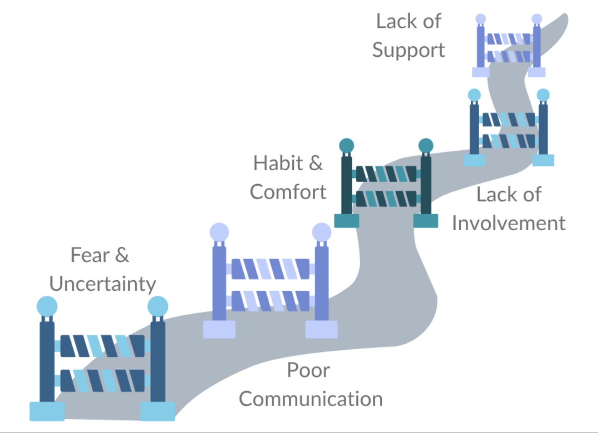

Your Change Compass: Navigating Uncertainty with Confidence
Roadblocks to Change
Use the audio player below to hear about some common roadblocks to change. Think about which ones you've encountered and what you can do to move past them on your path to change.
|
 |
Audio Transcript
Even when change is necessary or beneficial, it’s not always easy to make it happen. There are a few common roadblocks that can get in the way of successful change. The first is fear and uncertainty. People naturally worry about what change means for them — will their job be harder, will they still succeed, or will they lose control? This fear often leads to resistance, even when the change is positive. Another common barrier is lack of communication. When people don’t understand the reason behind the change or how it affects them, they’re more likely to fill in the blanks with assumptions or rumors. Clear, consistent communication is key to building trust. Next, there’s habit and comfort. We all get used to doing things a certain way, and old habits can be hard to break. Without support and training, people may slip back into old routines. Limited involvement is another roadblock. If employees feel change is being done to them instead of with them, they’re less likely to engage. Involving people early helps create a sense of ownership and buy-in. Finally, lack of leadership support can stall even the best-planned initiatives. When leaders don’t model the change or fail to reinforce it, others quickly lose motivation. By recognizing these roadblocks — fear, poor communication, habit, lack of involvement, and lack of leadership — organizations can plan ahead, address concerns early, and create smoother, more successful change experiences.